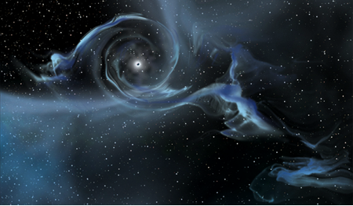

Uppgift anpassa sida till läs-device
Svarta Hål
Mera
Mest
Nu är bilderna små
Nu är bilderna större
Nu är bilderna ännu större
Här är några häftiga bilder på svarta hål
Svart hål
Ännu ett svart hål

Ytterligare ett svart hål